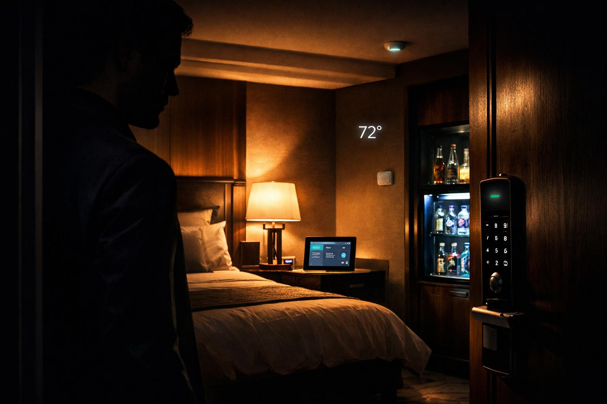
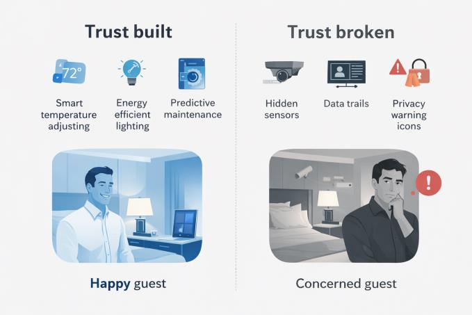
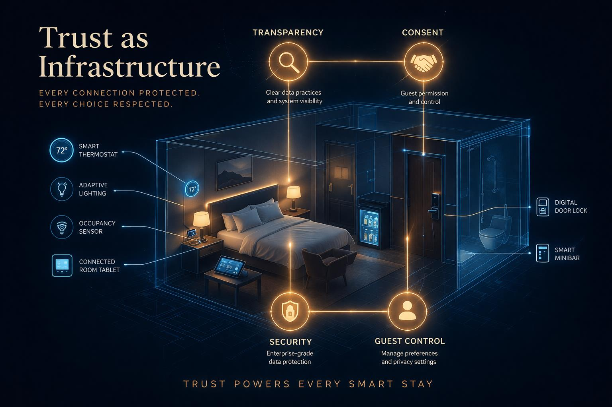

DMBA 6001 Leading Strategic Digital Transformation
When your hotel knows you better than yourself, who controls the trust relationship?
Hospitality or Surveillance?
If your hotel knew how hot you prefer your pillow to be, knew what time you need to leave for a conference and adjusted your room lighting based on your mood, would you consider it hospitality, or surveillance disguised as a service? (Gupta et al., 2026). This blog series has shown how blockchain provides trust through decentralization and how AI can create predictive confidence; however, IoT brings forward a conundrum that the former did not. IoT ultimately manipulates trust into a mechanism that can be measured, negotiated, and even broken in ways hotel guests are unbeknownst to. The key question isn’t whether or not IoT should be used; it is rather about who truly controls the trust relationship when technology knows you better than your close friends and family.

The Trust Paradox
IoT introduces tension to the long-standing trust in the hospitality industry; smart sensors enabling hyper-personalization are introducing surveillance anxiety (Torres, K., 2024). For instance, smart rooms can collect intimate guest data such as sleeping patterns, movement, and temperature preferences; however, this data collection is not optional. This data is used by hotels to monetize and generate an ROI on their IoT investment.
However, the guests themselves are the ones increasingly enabling this trade-off. A survey conducted by Spectrum Business revealed that 71% of luxury travelers were comfortable in their personal data being collected for more improved and personalized experiences, revealing an increasing concern surrounding “hidden tracking” (Torres, k., 2024). This is ultimately creating transactional trust whereby guests make decisions about whether they value convenience over privacy.
The trust paradox isn’t concerned with IoT creating surveillance, rather its central towards the notion that hospitality was traditionally built on the foundations of human connection and is now being measured through algorithmic compliance as opposed to the former emotional connection.

Trust as a Strategic Differentiator
Any hotel can easily install smart locks and implement voice assistants; however, true competitive advantage comes from the how the technology being used is able to maintain a considerable level of trust . For example, Marriott’s My Marriot app highlights this contrast as its guests can control their data preferences and are able to view precisely what information is collected whilst also being able to safely opt-out. Marriot’s transparency with its IoT technology ultimately transforms risk into an agency opportunity (Zhang et al., 2025).
In comparison to hotels which activate IoT features automatically without any disclosure, leaving guests to discover on their own, resulting in a decrease in guest trust and negative reviews on their stays. The key distinction here is not the technology itself rather than the capability, whether guest trust is a design requirement or a post-implementation action.
This is where platform thinking is a necessity, as trust is an extension beyond individual property to widespread partner networks and third-party data integrations. If IoT ecosystems break trust at any stage of a guest’s stay, the entire hotel brand suffers alongside its partners. One single point of failure can propagate all the way downstream (Gupta et al., 2026).

The Future of Trusted Hospitality
The future of hospitality should be concerned with creating trusted relationships focused on guest agency, not just operational convenience and personalization. Hotels using IoT as a mechanism for trust management will ultimately win the “loyalty wars” and win over their guests against competing hotel chains.
Trust is no longer an after-thought; it is the ultimate currency, with IoT playing a pivotal role in changing the exchange rate.
Reference List
- Gupta, P., Agarwal, M., & Kumari, N. (2026). Consumer trust and privacy in hospitality tech: A review of mobile check-in, contactless payments, and data governance. International Journal of Agriculture Extension and Social Development, 9(1), 488–500. https://doi.org/10.33545/26180723.2026.v9.i1g.2959
- Torres, K. (2024, June 24). Personalization vs. privacy in hospitality: Walking a tightrope to provide an optimal guest experience. Spectrum Business. https://www.spectrum.com/business/enterprise/insights/blog/hospitality-technology-personalization-privacy
- Zhang, G., Li, F. S., & Guan, J. (2025). The role of Internet of Things in shaping hotel booking intentions: A mixed-method investigation of customer perceptions and preferences. Journal of Hospitality and Tourism Management, 64, Article 101307. https://doi.org/10.1016/j.jhtm.2025.101307
This blog post was researched, written, and argued entirely by the author. Generative AI (OpenAI ChatGPT 5.3) was used to produce visual assets including the hero image and two body diagrams while a Qwen model assisted in research verification and reference accuracy. All arguments, analysis, and critical thinking reflect the author's own perspective and academic work.